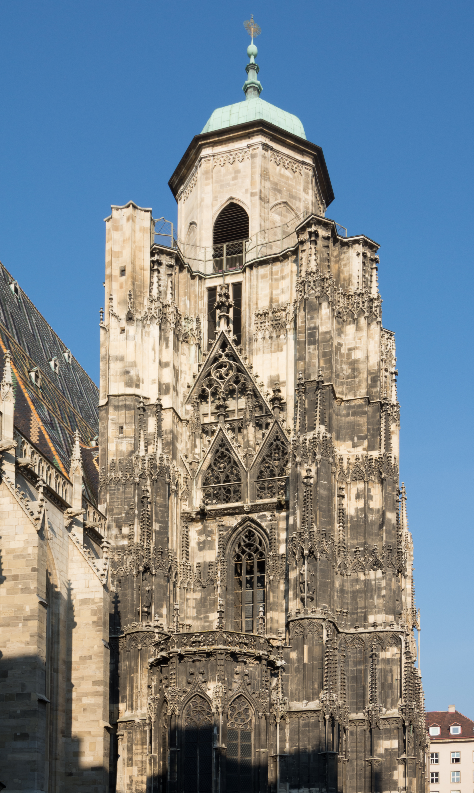

Valentin Forstner – 5R
Geografische Fakten
Traumstadt: Barcelona
Einwohnerzahl: ca. 1,73 Millionen
Top 3 Sehenswürdigkeiten
- Stephansdom
- Schloss Schönbrunn
- Prater
Kulinarische Spezialitäten
Visueller Eindruck

Foto von
Bwag
—
Stephansdom Nordturm 01.JPG
—
Lizenz:
CC BY-SA 3.0